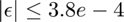
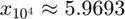

Homework 1 - Coding Part
Lucas Sawade - The tables for the exponential series are in the Appendix at the very end.
Contents
Exercise 2
2. (a)/(b) - An accurate implementation of exp(x) Work out by calculating numerator and the denominator of the terms of the taylor expansion
N = 31; x = 5.5; % Numerator and denominator num = ones(1,N); den = zeros(1,N); % Terms ter = zeros(1,N); iter = zeros(1,N); iter_sum = zeros(1,N); for j=1:N iter(j) = j-1; temp_num = 1; temp_den = 1; for k=1:(j-1) temp_num = round(temp_num*x, 5, 'significant'); temp_den = round(temp_den*k, 5, 'significant'); end num(j) = temp_num; den(j) = temp_den; ter(j) = round(num(j)/den(j), 5, 'significant'); if j==1 iter_sum(j) = ter(j); else iter_sum(j) = round(ter(j)+iter_sum(j-1),5, 'significant'); end end abserr = abs(iter_sum-exp(x)); relerr = abs(iter_sum-exp(x))/exp(x); fileID = fopen('exponential.txt','w'); fprintf(fileID,'%s %9s %12s %12s %12s %12s %12s \n','Term#','Numerator',... 'Denominator','Term','Partial Sum','Abs. Error','Rel. Error'); fprintf(fileID,'--------------------------------------------------------------------------------\n'); fprintf(fileID,'%2d%13.5g%13.5g%13.5g%13.5g%13.5g%13.5g\n',... [iter;num;den;ter;iter_sum;abserr;relerr]); fclose(fileID);
The the error does not change after iteration term 17. and is accurate to to only 2 decimal places in the absolute error. The relative error turns out to be relatively small. . See appendices table.
2. (c) repeat the exercise, but add the terms from right to left
rl_iter_sum = zeros(1,N); for j=1:N partial_sum = 0; for k = 1:j partial_sum = round(ter(j-k+1)+partial_sum,5, 'significant'); end rl_iter_sum(j) = partial_sum; end rl_abserr = abs(rl_iter_sum-exp(x)); rl_relerr = abs(rl_iter_sum-exp(x))/exp(x); fileID2 = fopen('exponential_right_left.txt','w'); fprintf(fileID2,'%s %9s %12s %12s %12s %12s %12s \n','Term#','Numerator',... 'Denominator','Term','Partial Sum','Abs. Error','Rel. Error'); fprintf(fileID2,'--------------------------------------------------------------------------------\n'); fprintf(fileID2,'%2d%13.5g%13.5g%13.5g%13.5g%13.5g%13.5g\n',... [iter;num;den;ter;rl_iter_sum;rl_abserr;rl_relerr]); fclose(fileID2); max(abs(rl_iter_sum-iter_sum))
ans =
0.0100
It takes more computations to make get closer to the actual number; specifically 4 more terms. In the plot, the errors are so close together that one is plotted on top of the other and therefore invisible.
lw = 2; fig = figure(1); subplot(2,1,1) plot(iter,abserr,'Linewidth',lw) hold on plot(iter,rl_abserr,'Linewidth',lw) hold off title('Absolute Error') legend('Left to right','Right to left','Location','NorthEastOutside') set(gca,"Fontsize",14,'Fontweight','bold','Linewidth',lw) subplot(2,1,2) plot(iter,relerr,'Linewidth',lw) hold on plot(iter,rl_relerr,'Linewidth',lw) hold off xlabel('Terms') legend('Left to right','Right to left','Location','NorthEastOutside') title('Relative Error l to r sum') set(gca,"Fontsize",14,'Fontweight','bold','Linewidth',1.5)
Clear Cariables before next computations
clearvars
2 (d) -- Convergence of the different methods -- (i) Left to right summation
N = 31; x = 5.5; % Numerator and denominator num = ones(1,N); den = zeros(1,N); % Terms ter = zeros(1,N); iter = zeros(1,N); iter_sum = zeros(1,N); for j=1:N iter(j) = j-1; % odd parts negative if mod(j-1,2)==1 temp_num = -1; temp_den = 1; else temp_num = 1; temp_den = 1; end for k=1:(j-1) temp_num = round(temp_num*x, 5, 'significant'); temp_den = round(temp_den*k, 5, 'significant'); end num(j) = temp_num; den(j) = temp_den; ter(j) = round(num(j)/den(j), 5, 'significant'); if j==1 iter_sum(j) = ter(j); else iter_sum(j) = round(ter(j)+iter_sum(j-1),5, 'significant'); end end abserr = abs(iter_sum-exp(-x)); relerr = abs(iter_sum-exp(-x))/exp(-x); fileID = fopen('exponential-.txt','w'); fprintf(fileID,'%s %9s %12s %12s %12s %12s %12s \n','Term#','Numerator',... 'Denominator','Term','Partial Sum','Abs. Error','Rel. Error'); fprintf(fileID,'--------------------------------------------------------------------------------\n'); fprintf(fileID,'%2d%13.5g%13.5g%13.5g%13.5g%13.5g%13.5g\n',... [iter;num;den;ter;iter_sum;abserr;relerr]); fclose(fileID);
2. (d) (ii) right to left summation
rl_iter_sum = zeros(1,N); for j=1:N partial_sum = 0; for k = 1:j partial_sum = round(ter(j-k+1)+partial_sum,5, 'significant'); end rl_iter_sum(j) = partial_sum; end rl_abserr = abs(rl_iter_sum-exp(-x)); rl_relerr = abs(rl_iter_sum-exp(-x))/exp(-x); fileID2 = fopen('exponential-_right_left.txt','w'); fprintf(fileID2,'%s %9s %12s %12s %12s %12s %12s \n','Term#','Numerator',... 'Denominator','Term','Partial Sum','Abs. Error','Rel. Error'); fprintf(fileID2,'--------------------------------------------------------------------------------\n'); fprintf(fileID2,'%2d%13.5g%13.5g%13.5g%13.5g%13.5g%13.5g\n',... [iter;num;den;ter;rl_iter_sum;rl_abserr;rl_relerr]); fclose(fileID2);
(iii) left to right split positive and negative sums
tot_sum = nan(1,N); for j=1:N partial_sum = 0; pos_sum = 0; neg_sum = 0; for k = 1:j %even if mod(k-1,2)==0 pos_sum = round(pos_sum + ter(k),5,'significant'); %odd else neg_sum = round(neg_sum + ter(k),5,'significant'); end partial_sum = round(pos_sum + neg_sum,5, 'significant'); end tot_sum(j) = partial_sum; end posneg_abserr = abs(tot_sum-exp(-x)); posneg_relerr = abs(tot_sum-exp(-x))/exp(-x); fileID2 = fopen('exp-posneg_left_to_right.txt','w'); fprintf(fileID2,'%s %9s %12s %12s %12s %12s %12s \n','Term#','Numerator',... 'Denominator','Term','Partial Sum','Abs. Error','Rel. Error'); fprintf(fileID2,'--------------------------------------------------------------------------------\n'); fprintf(fileID2,'%2d%13.5g%13.5g%13.5g%13.5g%13.5g%13.5g\n',... [iter;num;den;ter;tot_sum;posneg_abserr;posneg_relerr]); fclose(fileID2);
(iv) right to left sum, split positive and negative sums
rl_tot_sum = nan(1,N); for j=1:N partial_sum = 0; pos_sum = 0; neg_sum = 0; for k = 1:j %even if mod(k-1,2)==0 pos_sum = round(pos_sum + ter(j-k+1),5,'significant'); %odd else neg_sum = round(neg_sum + ter(j-k+1),5,'significant'); end partial_sum = round(pos_sum + neg_sum,5, 'significant'); end rl_tot_sum(j) = partial_sum; end rl_posneg_abserr = abs(rl_tot_sum-exp(-x)); rl_posneg_relerr = abs(rl_tot_sum-exp(-x))/exp(-x); fileID2 = fopen('exp-posneg_right_to_left.txt','w'); fprintf(fileID2,'%s %9s %12s %12s %12s %12s %12s \n','Term#','Numerator',... 'Denominator','Term','Partial Sum','Abs. Error','Rel. Error'); fprintf(fileID2,'--------------------------------------------------------------------------------\n'); fprintf(fileID2,'%2d%13.5g%13.5g%13.5g%13.5g%13.5g%13.5g\n',... [iter;num;den;ter;rl_tot_sum;rl_posneg_abserr;rl_posneg_relerr]); fclose(fileID2);
lw = 2; % lineweight % Plotting the competition in one plot figure(3) subplot(3,1,1) plot(iter,iter_sum,'Linewidth',lw) hold on plot(iter,rl_iter_sum,'Linewidth',lw) plot(iter,tot_sum,'Linewidth',lw) plot(iter,rl_tot_sum,'Linewidth',lw) hold off ylabel('Sum') title('1.d) - Sum Competition') set(gca,"Fontsize",14,'Fontweight','bold','Linewidth',1.5) subplot(3,1,2) plot(iter,abs(iter_sum-exp(-x)),'Linewidth',lw) hold on plot(iter,abs(rl_iter_sum-exp(-x)),'Linewidth',lw) plot(iter,abs(tot_sum-exp(-x))) plot(iter,abs(rl_tot_sum-exp(-x)),'Linewidth',lw) hold off ylabel('Abs. Err') title('1.d) - Absolute Error') set(gca,"Fontsize",14,'Fontweight','bold','Linewidth',1.5) subplot(3,1,3) plot(iter,abs(iter_sum-exp(-x))/exp(-x),'Linewidth',lw) hold on plot(iter,abs(rl_iter_sum-exp(-x))/exp(-x),'Linewidth',lw) plot(iter,abs(tot_sum-exp(-x))/exp(-x),'Linewidth',lw) plot(iter,abs(rl_tot_sum-exp(-x))/exp(-x),'Linewidth',lw) hold off xlabel('Terms') ylabel('Rel. Err') title('1.d) - Relative Error') set(gca,"Fontsize",14,'Fontweight','bold','Linewidth',1.5)
See appendices for attached table of the computations. Comparing the first two approaches: For exp(-x) it takes much less terms for the right to left summation. In fact, until the summations become insignificant it takes 19 terms where as the left to right summation takes 25. Additionally, the final error of the right to left summation is ~1/3 of the size of the left to right summation's error which is interesting
The standard left to right sum never gets closer to 0 than . And only reaches the insignificance of terms after 22 terms have been added. Likewise, the right to left sum reaches the limit of significant addition by term 20, which is 2 less terms. However, the error is slightly larger  . The Split sum are not only more efficient, they are also more accurate. Both reach 0 after 18 terms have been added and, hence, show 0 error. However, The right to left sum is returning an error of $|\epsilon| \leq 1e-2 after summation of higher order terms, which is weird. What's interesting that the relative error when computing the split sums approaches 1 since the partial sums seem to lose significant figures and are simpy set to 0 after a certain amount of steps.
. The Split sum are not only more efficient, they are also more accurate. Both reach 0 after 18 terms have been added and, hence, show 0 error. However, The right to left sum is returning an error of $|\epsilon| \leq 1e-2 after summation of higher order terms, which is weird. What's interesting that the relative error when computing the split sums approaches 1 since the partial sums seem to lose significant figures and are simpy set to 0 after a certain amount of steps.
2 (e) One way of calculating is by computing and take the reciprocal. Let's see how that goes:
N = 31; x = 5.5; % Numerator and denominator num = ones(1,N); den = zeros(1,N); % Terms ter = zeros(1,N); iter = zeros(1,N); iter_sum = zeros(1,N); for j=1:N iter(j) = j-1; temp_num = 1; temp_den = 1; for k=1:(j-1) temp_num = round(temp_num*x, 5, 'significant'); temp_den = round(temp_den*k, 5, 'significant'); end num(j) = temp_num; den(j) = temp_den; ter(j) = round(num(j)/den(j), 5, 'significant'); if j==1 iter_sum(j) = ter(j); else iter_sum(j) = round(ter(j)+iter_sum(j-1),5, 'significant'); end end % Division operation 1 iter_sum = round(1./iter_sum,5, 'significant'); abserr = abs(iter_sum-exp(-x)); relerr = abs(iter_sum-exp(-x))/exp(-x); fileID = fopen('neg_exponential.txt','w'); fprintf(fileID,'%s %9s %12s %12s %12s %12s %12s \n','Term#','Numerator',... 'Denominator','Term','Partial Sum','Abs. Error','Rel. Error'); fprintf(fileID,'--------------------------------------------------------------------------------\n'); fprintf(fileID,'%2d%13.5g%13.5g%13.5g%13.5g%13.5g%13.5g\n',... [iter;num;den;ter;iter_sum;abserr;relerr]); fclose(fileID);
The table is found in the appendix. The error stays the same after approximately the same amount of steps, but what's amazing is the accuracy compared to computing the negative exponential directly through its series. Here, the relative error is of the order of e(-5) and the absolute error of the order of e(-7). Both significantly less than when computing the series directly.
Clear variables
clearvars
Exercise 4
(a) Condition
x = linspace(-2,2,1002); % Function y = 1-exp(-x); % Condition if eps=1 condy = abs(exp(-x).*x)./abs(exp(-x)-1); % Derivative dydx = exp(-x); % Plots lw = 2; % Linewidth figure(4) plot(x,y,x,dydx,'Linewidth',lw) hold on plot(x,condy,'Linewidth',lw) axis equal axis([0 1 0 1]) hold off legend({"$f(x) = 1-e^{-x}$","$f'(x) = e^{-x}$","$(cond[f])(x)$"},... 'Interpreter','latex') xlabel('\bf{x}','Interpreter','latex') ylabel('\bf{y} ','Interpreter','latex','Rotation',0,... 'HorizontalAlignment','right') title('\bf{4.(a) Conditioning}','Interpreter','latex') set(gca,"Fontsize",14,'Fontweight','bold','Linewidth',lw,... 'TickLabelInterpreter','latex') axesH = gca; axesH.XAxis.TickLabelFormat = '\\textbf{%g}'; axesH.YAxis.TickLabelFormat = '\\textbf{%g}';
(c)
x = linspace(-2,2,1002); % Function y = 1-exp(-x); % Condition if eps=1 condy = abs(exp(-x).*x)./abs(exp(-x)-1); % Condition if eps=1 condA = (exp(1)-1)./x; % Plots lw = 2; % Linewidth figure(4) plot(x,y,'Linewidth',lw) hold on plot(x,condy,'Linewidth',lw) plot(x,condA,'Linewidth',lw) % axis equal axis([0 1 0 3]) hold off legend({"$f(x) = 1-e^{-x}$","$(cond[f])(x)$","$(cond[A])(x)$"},... 'Interpreter','latex') xlabel('\bf{x}','Interpreter','latex') ylabel('\bf{y} ','Interpreter','latex','Rotation',0,... 'HorizontalAlignment','right') title('\bf{4.(a) Conditioning}','Interpreter','latex') set(gca,"Fontsize",14,'Fontweight','bold','Linewidth',lw,... 'TickLabelInterpreter','latex') axesH = gca; axesH.XAxis.TickLabelFormat = '\\textbf{%g}'; axesH.YAxis.TickLabelFormat = '\\textbf{%g}';
(f) The function is ill-conditioned due the subtraction of a number very close to one but not 1 from 1 as approaches 0. In the condition itself, it's the division by something close to zero due to the denominator approaching 0.
clear variables
clearvars
Exercise 5
The simplest thing is to do a while loop that checks whether the real value , where .
% real value real_value = exp(1); % starting n n = 10^0; % Tolerance eps = 1e-12; % Approximation function, Matlab equivalent to lambda, in this case ok I % think f = @(n) (1 + 1/n)^(n); % Some counter counter = 1; % First approximation value approx = f(n(counter)); % No error can be computed err = NaN; % Some counter counter = 2; % Compute the specified n n(counter) = 10^(counter-1); % Compute approximation approx(counter) = f(n(counter)); % Calculate error between second and first approximation err(counter) = abs(approx(counter)-approx(counter-1)); % while err(counter)>eps for k=1:30 % increase step counter = counter + 1; if counter == 30 break end % Compute the specified n n(counter) = 10^(counter-1); % Compute approximation approx(counter) = f(n(counter)); % Compute Error err(counter) = abs(approx(counter)-approx(counter-1)); end
fileID2 = fopen('exponential_series_approx.txt','w'); fprintf(fileID2,'%16s%16s%16s\n','n','e(x)_approx','Absolute Error'); fprintf(fileID2,'------------------------------------------------\n'); fprintf(fileID2,'%16.5g%16.5g%16.5g\n',[n',approx',err']'); fclose(fileID2);
Results:
fprintf('nstop: %g\n',n(end)) fprintf('Final Approximation of e: %f\n',approx(end)) clearvars
nstop: 1e+28 Final Approximation of e: 1.000000
Exercise 6
Squareroot thing
x = linspace(1,10,1001); y = x; N = 52; for i=1:N y = sqrt(y); end for i=1:N y = y.^2; end lw = 2; figure(4) plot(x,y,'Linewidth',lw) xlabel('\textbf{x}','Interpreter','latex') ylabel('\textbf{y}','Interpreter','latex') title('\bf{52 times $\sqrt{x}$ and then 52 times ${x}^2$}',... 'Interpreter','latex') set(gca,"Fontsize",14,'Fontweight','bold','Linewidth',lw,... 'TickLabelInterpreter','latex') axesH = gca; axesH.XAxis.TickLabelFormat = '\\textbf{%g}'; axesH.YAxis.TickLabelFormat = '\\textbf{%g}';
Exercise 7
(a) Wilkinson polynomial roots
wilk_root = 1:20; % Get coefficients from a polynomial c = poly(wilk_root); % Derivative coefficients dc = polyder(c);
(b)
w = @(x) polyval(c, x); % Wilkinson polynomial dw = @(x) polyval(dc,x); % derivative of wilkinson polynomial
Plot fucntion and derivative on
x = linspace(-1,21,10000); fw = nan(1,numel(x)); dfw = nan(1,numel(x)); for k = 1:numel(x) fw(k) = w(x(k)); dfw(k) = dw(x(k)); end lw = 2; figure(5) plot(x,fw,'LineWidth',lw) % xlim([3.95,4.05]) axis([16.995,17.005,-10^11,10^11]) legend({'$\mathbf{w(x)}$'},'Interpreter','latex') xlabel('\textbf{x}','Interpreter','latex') ylabel('\textbf{y}','Interpreter','latex') title('\bf{Wilkinson Polynomial and its Derivative}','Interpreter','latex') set(gca,"Fontsize",14,'Fontweight','bold','Linewidth',lw,... 'TickLabelInterpreter','latex') axesH = gca; axesH.XAxis.TickLabelFormat = '\\textbf{%g}'; axesH.YAxis.TickLabelFormat = '\\textbf{%g}';
% Mini Newton N = 1; x0 = 21; for k=1:N x1 = x0-w(x0)/dw(x0); x0 = x1; end
Relative error between Newton root and real root at x = 20 and after 20 iterations
err_N = abs((x1-20)/20)
err_N =
0.0361
Matlabs built in root finder
wilk_roots = roots(c)
wilk_roots =
19.9999
19.0013
17.9937
17.0185
15.9597
15.0593
13.9302
13.0627
11.9589
11.0225
9.9912
9.0027
7.9994
7.0001
6.0000
5.0000
4.0000
3.0000
2.0000
1.0000
Error between Matlab Root and real root at x = 20:
err_m = abs((wilk_roots(1)-20)/20)
err_m = 6.2972e-06
After the statement 'Does it?' in the exercise, I was genuinely surprised that the simplest form of the root finder, coded by hand, found it immediately (to a certain accuracy). I also tried a bunch of other numbers within and close to the interval that all worked. I mean, it was just trial and error. I could have easily missed one where it loops forever.
That was until I realized that the function oscillates quite a lot and seems to have multiple roots (more than 20). This gets worse the closer one gets to the highest root of . The zoomed-in figure shows that the Wilkinson Polynomial fluctates alot. Meaning, that a root finder has a really hard time since the graph crosses the x axis a lot.
7 (c)
delta = 10^(-2); % Wilkinson polynomial roots wilk_rootc = 1:20; % Get coefficients from a polynomial cc = poly(wilk_rootc); cc(1) = cc(1) + delta; % cc(1) is the a = 1; % Derivative coefficients dcc = polyder(cc); % Create Polynomials wc = @(x) polyval(cc, x); % Wilkinson polynomial dwc = @(x) polyval(dcc,x); % derivative of wilkinson polynomial % Mini Newton Nc = 10000; x0c = 21; for k=1:Nc x1c = x0c-wc(x0c)/dwc(x0c); x0c = x1c; end
For , the algorithm does not converge to 20; after 10000, which is not a root andnot unexpected when thinking about the results that follow in exercise part (e). The possible error is supposed to be large.
Also for , the algorithm does not converges to 20 her either, after 10000
Also for , the algorithm does not converge to 20, but it does converge to another root, i.e., 6. Seems alot closer to a root than the previous 2 solutions with  after 10000.
Also for , the algorithm does not converge either with a value that is quite a lot off; after 10000 iterations, which is a larger margin to the actual value.
My explanation for these fluctuations is that the the values actually not represent roots but close neighbors. it seems like the polynomial has more than 20 roots due to fluctuations
(d)
delta = -2^(-53); % Wilkinson polynomial roots wilk_rootd = 1:20; % Get coefficients from a polynomial cd = poly(wilk_rootd); cd(2) = cd(2) + delta; % cd(2) is the a_19 = -210; % Derivative coefficients dcd = polyder(cd); % Create Polynomials wd = @(x) polyval(cd, x); % Wilkinson polynomial dwd = @(x) polyval(dcd,x); % derivative of wilkinson polynomial % Mini Newton Nd = 10000; x0d = 21; for k=1:Nd x1d = x0d-wd(x0d)/dwd(x0d); x0d = x1d; end
For on , the algorithm converges safely to 20; , which is unexpected when thinking about the results that follow in exercise part (e).
(e) - (ii) Compute the condition for
cond_omega = zeros(1,20); % polynomial coefficients a = fliplr(c); % predefined root omega = 1:20; for k=1:20 for l=1:20 cond_omega(k) = cond_omega(k) + abs(a(l)*omega(k)^(l-1)/dw(omega(k))); end end lw = 2; figure(6) plot(omega,cond_omega,'LineWidth',lw) legend({'$\mathbf{w(x)}$'},'Interpreter','latex') xlabel('\textbf{$\Omega_k$}','Interpreter','latex') ylabel('\textbf{ $(cond \Omega_k) (\vec{a}) $}','Interpreter','latex') title('\textbf{ Condition of $\Omega_k$}','Interpreter','latex') set(gca,"Fontsize",14,'Fontweight','bold','Linewidth',lw,... 'TickLabelInterpreter','latex') axesH = gca; axesH.XAxis.TickLabelFormat = '\\textbf{%g}'; axesH.YAxis.TickLabelFormat = '\\textbf{%g}';
The condition number for the roots ![$[14,16,17,20]$](exset1_eq01175928258725423126.png) are simply bad. It apparently is worst at 14 and best at 0. Even though it looks like the condition goes to 0 at 20 it merely goes to , whereas at
are simply bad. It apparently is worst at 14 and best at 0. Even though it looks like the condition goes to 0 at 20 it merely goes to , whereas at  it is actually significantly smaller .
it is actually significantly smaller .
(iii) As seen in the above results, the problem is ill-conditioned, on the domain from . Since the problem itself is ill-posed, there is no way of getting around the issue. This is large du to the large factors of the polynomial.
Exercise 8
(c) Brute Force computing Stirling's approximation to get a guess'timate of
for N=29:34 N; N*log(N)-N; end % Set N to a smaller range of numbers N = factorial([30 31 32 33]); k = 20; kOverEps = factorial(k)*2^52; % Calculate least close (N-kOverEps)
ans = 1.0e+36 * -0.0107 -0.0027 0.2522 8.6724
Smallest can be to get a good approximation of is .
(d)
N = 32; yN = 0; k = 20; for l = fliplr(k:1:N-1) yk = (exp(1)-yN)/(1+l); yN = yk; end yk
yk =
0.1238
From Wolfram alpha I got ca. 0.123804 which is pretty exactly what I am getting here. That's crazy. And testing different starting values shows that N = 32 is the least upper bound of N. After that the significant digit does not change anymore.
Appendix
Exercise 2. All tables on exercise 2 and its error propagation
exp(x) left to right summation
Term# Numerator Denominator Term Partial Sum Abs. Error Rel. Error -------------------------------------------------------------------------------- 0 1 1 1 1 243.69 0.99591 1 5.5 1 5.5 6.5 238.19 0.97344 2 30.25 2 15.125 21.625 223.07 0.91162 3 166.38 6 27.73 49.355 195.34 0.7983 4 915.09 24 38.129 87.484 157.21 0.64247 5 5033 120 41.942 129.43 115.26 0.47105 6 27682 720 38.447 167.88 76.812 0.31391 7 1.5225e+05 5040 30.208 198.09 46.602 0.19045 8 8.3738e+05 40320 20.768 218.86 25.832 0.10557 9 4.6056e+06 3.6288e+05 12.692 231.55 13.142 0.053708 10 2.5331e+07 3.6288e+06 6.9805 238.53 6.1619 0.025182 11 1.3932e+08 3.9917e+07 3.4902 242.02 2.6719 0.01092 12 7.6626e+08 4.79e+08 1.5997 243.62 1.0719 0.0043807 13 4.2144e+09 6.227e+09 0.67679 244.3 0.39193 0.0016017 14 2.3179e+10 8.7178e+10 0.26588 244.57 0.12193 0.00049831 15 1.2748e+11 1.3077e+12 0.097484 244.67 0.021932 8.9632e-05 16 7.0114e+11 2.0923e+13 0.03351 244.7 0.0080677 3.2971e-05 17 3.8563e+12 3.5569e+14 0.010842 244.71 0.018068 7.3839e-05 18 2.121e+13 6.4024e+15 0.0033128 244.71 0.018068 7.3839e-05 19 1.1666e+14 1.2165e+17 0.00095898 244.71 0.018068 7.3839e-05 20 6.4163e+14 2.433e+18 0.00026372 244.71 0.018068 7.3839e-05 21 3.529e+15 5.1093e+19 6.907e-05 244.71 0.018068 7.3839e-05 22 1.941e+16 1.124e+21 1.7269e-05 244.71 0.018068 7.3839e-05 23 1.0676e+17 2.5852e+22 4.1297e-06 244.71 0.018068 7.3839e-05 24 5.8718e+17 6.2045e+23 9.4638e-07 244.71 0.018068 7.3839e-05 25 3.2295e+18 1.5511e+25 2.0821e-07 244.71 0.018068 7.3839e-05 26 1.7762e+19 4.0329e+26 4.4043e-08 244.71 0.018068 7.3839e-05 27 9.7691e+19 1.0889e+28 8.9715e-09 244.71 0.018068 7.3839e-05 28 5.373e+20 3.0489e+29 1.7623e-09 244.71 0.018068 7.3839e-05 29 2.9552e+21 8.8418e+30 3.3423e-10 244.71 0.018068 7.3839e-05 30 1.6254e+22 2.6525e+32 6.1278e-11 244.71 0.018068 7.3839e-05
exp(x) right to left summation
Term# Numerator Denominator Term Partial Sum Abs. Error Rel. Error -------------------------------------------------------------------------------- 0 1 1 1 1 243.69 0.99591 1 5.5 1 5.5 6.5 238.19 0.97344 2 30.25 2 15.125 21.625 223.07 0.91162 3 166.38 6 27.73 49.355 195.34 0.7983 4 915.09 24 38.129 87.484 157.21 0.64247 5 5033 120 41.942 129.43 115.26 0.47105 6 27682 720 38.447 167.88 76.812 0.31391 7 1.5225e+05 5040 30.208 198.09 46.602 0.19045 8 8.3738e+05 40320 20.768 218.86 25.832 0.10557 9 4.6056e+06 3.6288e+05 12.692 231.55 13.142 0.053708 10 2.5331e+07 3.6288e+06 6.9805 238.53 6.1619 0.025182 11 1.3932e+08 3.9917e+07 3.4902 242.02 2.6719 0.01092 12 7.6626e+08 4.79e+08 1.5997 243.62 1.0719 0.0043807 13 4.2144e+09 6.227e+09 0.67679 244.29 0.40193 0.0016426 14 2.3179e+10 8.7178e+10 0.26588 244.56 0.13193 0.00053918 15 1.2748e+11 1.3077e+12 0.097484 244.66 0.031932 0.0001305 16 7.0114e+11 2.0923e+13 0.03351 244.69 0.0019323 7.8967e-06 17 3.8563e+12 3.5569e+14 0.010842 244.7 0.0080677 3.2971e-05 18 2.121e+13 6.4024e+15 0.0033128 244.7 0.0080677 3.2971e-05 19 1.1666e+14 1.2165e+17 0.00095898 244.7 0.0080677 3.2971e-05 20 6.4163e+14 2.433e+18 0.00026372 244.7 0.0080677 3.2971e-05 21 3.529e+15 5.1093e+19 6.907e-05 244.71 0.018068 7.3839e-05 22 1.941e+16 1.124e+21 1.7269e-05 244.71 0.018068 7.3839e-05 23 1.0676e+17 2.5852e+22 4.1297e-06 244.71 0.018068 7.3839e-05 24 5.8718e+17 6.2045e+23 9.4638e-07 244.71 0.018068 7.3839e-05 25 3.2295e+18 1.5511e+25 2.0821e-07 244.71 0.018068 7.3839e-05 26 1.7762e+19 4.0329e+26 4.4043e-08 244.71 0.018068 7.3839e-05 27 9.7691e+19 1.0889e+28 8.9715e-09 244.71 0.018068 7.3839e-05 28 5.373e+20 3.0489e+29 1.7623e-09 244.71 0.018068 7.3839e-05 29 2.9552e+21 8.8418e+30 3.3423e-10 244.71 0.018068 7.3839e-05 30 1.6254e+22 2.6525e+32 6.1278e-11 244.71 0.018068 7.3839e-05
exp(-x) left to right summation
Term# Numerator Denominator Term Partial Sum Abs. Error Rel. Error -------------------------------------------------------------------------------- 0 1 1 1 1 0.99591 243.69 1 -5.5 1 -5.5 -4.5 4.5041 1102.1 2 30.25 2 15.125 10.625 10.621 2598.9 3 -166.38 6 -27.73 -17.105 17.109 4186.5 4 915.09 24 38.129 21.024 21.02 5143.4 5 -5033 120 -41.942 -20.918 20.922 5119.5 6 27682 720 38.447 17.529 17.525 4288.2 7 -1.5225e+05 5040 -30.208 -12.679 12.683 3103.4 8 8.3738e+05 40320 20.768 8.089 8.0849 1978.3 9 -4.6056e+06 3.6288e+05 -12.692 -4.603 4.6071 1127.3 10 2.5331e+07 3.6288e+06 6.9805 2.3775 2.3734 580.76 11 -1.3932e+08 3.9917e+07 -3.4902 -1.1127 1.1168 273.27 12 7.6626e+08 4.79e+08 1.5997 0.487 0.48291 118.16 13 -4.2144e+09 6.227e+09 -0.67679 -0.18979 0.19388 47.44 14 2.3179e+10 8.7178e+10 0.26588 0.07609 0.072003 17.619 15 -1.2748e+11 1.3077e+12 -0.097484 -0.021394 0.025481 6.2349 16 7.0114e+11 2.0923e+13 0.03351 0.012116 0.0080292 1.9647 17 -3.8563e+12 3.5569e+14 -0.010842 0.001274 0.0028128 0.68826 18 2.121e+13 6.4024e+15 0.0033128 0.0045868 0.00050003 0.12235 19 -1.1666e+14 1.2165e+17 -0.00095898 0.0036278 0.00045897 0.11231 20 6.4163e+14 2.433e+18 0.00026372 0.0038915 0.00019527 0.047781 21 -3.529e+15 5.1093e+19 -6.907e-05 0.0038224 0.00026437 0.06469 22 1.941e+16 1.124e+21 1.7269e-05 0.0038397 0.00024707 0.060456 23 -1.0676e+17 2.5852e+22 -4.1297e-06 0.0038356 0.00025117 0.06146 24 5.8718e+17 6.2045e+23 9.4638e-07 0.0038365 0.00025027 0.061239 25 -3.2295e+18 1.5511e+25 -2.0821e-07 0.0038363 0.00025047 0.061288 26 1.7762e+19 4.0329e+26 4.4043e-08 0.0038363 0.00025047 0.061288 27 -9.7691e+19 1.0889e+28 -8.9715e-09 0.0038363 0.00025047 0.061288 28 5.373e+20 3.0489e+29 1.7623e-09 0.0038363 0.00025047 0.061288 29 -2.9552e+21 8.8418e+30 -3.3423e-10 0.0038363 0.00025047 0.061288 30 1.6254e+22 2.6525e+32 6.1278e-11 0.0038363 0.00025047 0.061288
exp(-x) right to left summation
Term# Numerator Denominator Term Partial Sum Abs. Error Rel. Error -------------------------------------------------------------------------------- 0 1 1 1 1 0.99591 243.69 1 -5.5 1 -5.5 -4.5 4.5041 1102.1 2 30.25 2 15.125 10.625 10.621 2598.9 3 -166.38 6 -27.73 -17.105 17.109 4186.5 4 915.09 24 38.129 21.024 21.02 5143.4 5 -5033 120 -41.942 -20.918 20.922 5119.5 6 27682 720 38.447 17.529 17.525 4288.2 7 -1.5225e+05 5040 -30.208 -12.679 12.683 3103.4 8 8.3738e+05 40320 20.768 8.089 8.0849 1978.3 9 -4.6056e+06 3.6288e+05 -12.692 -4.603 4.6071 1127.3 10 2.5331e+07 3.6288e+06 6.9805 2.378 2.3739 580.88 11 -1.3932e+08 3.9917e+07 -3.4902 -1.113 1.1171 273.34 12 7.6626e+08 4.79e+08 1.5997 0.487 0.48291 118.16 13 -4.2144e+09 6.227e+09 -0.67679 -0.19 0.19409 47.491 14 2.3179e+10 8.7178e+10 0.26588 0.076 0.071913 17.597 15 -1.2748e+11 1.3077e+12 -0.097484 -0.021 0.025087 6.1385 16 7.0114e+11 2.0923e+13 0.03351 0.012 0.0079132 1.9363 17 -3.8563e+12 3.5569e+14 -0.010842 0.001 0.0030868 0.75531 18 2.121e+13 6.4024e+15 0.0033128 0.005 0.00091323 0.22346 19 -1.1666e+14 1.2165e+17 -0.00095898 0.004 8.6771e-05 0.021232 20 6.4163e+14 2.433e+18 0.00026372 0.004 8.6771e-05 0.021232 21 -3.529e+15 5.1093e+19 -6.907e-05 0.004 8.6771e-05 0.021232 22 1.941e+16 1.124e+21 1.7269e-05 0.004 8.6771e-05 0.021232 23 -1.0676e+17 2.5852e+22 -4.1297e-06 0.004 8.6771e-05 0.021232 24 5.8718e+17 6.2045e+23 9.4638e-07 0.004 8.6771e-05 0.021232 25 -3.2295e+18 1.5511e+25 -2.0821e-07 0.004 8.6771e-05 0.021232 26 1.7762e+19 4.0329e+26 4.4043e-08 0.004 8.6771e-05 0.021232 27 -9.7691e+19 1.0889e+28 -8.9715e-09 0.004 8.6771e-05 0.021232 28 5.373e+20 3.0489e+29 1.7623e-09 0.004 8.6771e-05 0.021232 29 -2.9552e+21 8.8418e+30 -3.3423e-10 0.004 8.6771e-05 0.021232 30 1.6254e+22 2.6525e+32 6.1278e-11 0.004 8.6771e-05 0.021232
exp(-5.5) computed via 1/x
Term# Numerator Denominator Term Partial Sum Abs. Error Rel. Error -------------------------------------------------------------------------------- 0 1 1 1 1 0.99591 243.69 1 5.5 1 5.5 0.15385 0.14976 36.646 2 30.25 2 15.125 0.046243 0.042156 10.315 3 166.38 6 27.73 0.020261 0.016174 3.9577 4 915.09 24 38.129 0.011431 0.0073442 1.7971 5 5033 120 41.942 0.0077262 0.0036394 0.89054 6 27682 720 38.447 0.0059566 0.0018698 0.45753 7 1.5225e+05 5040 30.208 0.0050482 0.00096143 0.23525 8 8.3738e+05 40320 20.768 0.0045691 0.00048233 0.11802 9 4.6056e+06 3.6288e+05 12.692 0.0043187 0.00023193 0.056751 10 2.5331e+07 3.6288e+06 6.9805 0.0041923 0.00010553 0.025822 11 1.3932e+08 3.9917e+07 3.4902 0.0041319 4.5129e-05 0.011043 12 7.6626e+08 4.79e+08 1.5997 0.0041048 1.8029e-05 0.0044114 13 4.2144e+09 6.227e+09 0.67679 0.0040933 6.5286e-06 0.0015975 14 2.3179e+10 8.7178e+10 0.26588 0.0040888 2.0286e-06 0.00049637 15 1.2748e+11 1.3077e+12 0.097484 0.0040871 3.2856e-07 8.0396e-05 16 7.0114e+11 2.0923e+13 0.03351 0.0040866 1.7144e-07 4.195e-05 17 3.8563e+12 3.5569e+14 0.010842 0.0040865 2.7144e-07 6.6419e-05 18 2.121e+13 6.4024e+15 0.0033128 0.0040865 2.7144e-07 6.6419e-05 19 1.1666e+14 1.2165e+17 0.00095898 0.0040865 2.7144e-07 6.6419e-05 20 6.4163e+14 2.433e+18 0.00026372 0.0040865 2.7144e-07 6.6419e-05 21 3.529e+15 5.1093e+19 6.907e-05 0.0040865 2.7144e-07 6.6419e-05 22 1.941e+16 1.124e+21 1.7269e-05 0.0040865 2.7144e-07 6.6419e-05 23 1.0676e+17 2.5852e+22 4.1297e-06 0.0040865 2.7144e-07 6.6419e-05 24 5.8718e+17 6.2045e+23 9.4638e-07 0.0040865 2.7144e-07 6.6419e-05 25 3.2295e+18 1.5511e+25 2.0821e-07 0.0040865 2.7144e-07 6.6419e-05 26 1.7762e+19 4.0329e+26 4.4043e-08 0.0040865 2.7144e-07 6.6419e-05 27 9.7691e+19 1.0889e+28 8.9715e-09 0.0040865 2.7144e-07 6.6419e-05 28 5.373e+20 3.0489e+29 1.7623e-09 0.0040865 2.7144e-07 6.6419e-05 29 2.9552e+21 8.8418e+30 3.3423e-10 0.0040865 2.7144e-07 6.6419e-05 30 1.6254e+22 2.6525e+32 6.1278e-11 0.0040865 2.7144e-07 6.6419e-05
Exercise 5. Significance when computing e.
n e(x)_approx Absolute Error
------------------------------------------------
1 2 NaN
10 2.5937 0.59374
100 2.7048 0.11107
1000 2.7169 0.01211
10000 2.7181 0.001222
1e+05 2.7183 0.00012231
1e+06 2.7183 1.2232e-05
1e+07 2.7183 1.225e-06
1e+08 2.7183 1.0422e-07
1e+09 2.7183 2.5366e-07
1e+10 2.7183 1.2232e-09
1e+11 2.7183 1.2232e-10
1e+12 2.7185 0.00024144
1e+13 2.7161 0.0024135
1e+14 2.7161 1.2168e-13
1e+15 3.035 0.31893
1e+16 1 2.035
1e+17 1 0
1e+18 1 0
1e+19 1 0
1e+20 1 0
1e+21 1 0
1e+22 1 0
1e+23 1 0
1e+24 1 0
1e+25 1 0
1e+26 1 0
1e+27 1 0
1e+28 1 0